source("In-class_Ex/In-class_Ex04/In-class_Ex04.R")In-class Exercise 4
Geographically weighted summary statistics · Hunan, 2012
What this exercise investigates
A provincial average can hide quite different local economic conditions. I use Hunan’s 88 county-level areas to compare GDP per capita with geographically weighted summaries. My question is how much the local picture changes when I change the neighbourhood or weighting kernel.
This follows the preparation, mapping, conversion, bandwidth and summary-statistics sequence in the supplied class script. The extensions refer to Dr Kam’s Lesson 4. The checks, comparisons and explanations are developed for this exercise.
Download the complete RStudio script. Open it in the course project and use Ctrl+Enter for selected lines or Source for the complete analysis. This is separate from Hands-on Exercise 4, which remains unchanged.
Packages and reproducibility
The script uses sf, dplyr, readr, readxl, spdep, tmap, ggplot2 and GWmodel; tables use knitr. I use ggplot2 for descriptive charts rather than loading ggstatsplot and the entire tidyverse for functions not needed here.
Extract the supplied Hunan ZIP into this exercise folder, or set COURSE_DATA_ZIP to its location. The script checks seven input files against recorded checksums. Rendering executes the complete script; the excerpts below show the same code, and the full script is displayed at the end.
Preparing the data
Import sf polygons and a CSV tibble, join by County, and retain NAME_2, ID_3, NAME_3, County, GDPPC, GIO, Agri and Service. Named selection is safer than column positions if the input schema changes.
hunan_boundary <- st_read(file.path(input_base4,"data/geospatial/Hunan.shp"),quiet=TRUE)
hunan2012 <- read_csv(file.path(input_base4,"data/aspatial/Hunan_2012.csv"),show_col_types=FALSE)
stopifnot(!anyDuplicated(hunan_boundary$County),!anyDuplicated(hunan2012$County))
unmatched_boundary <- anti_join(st_drop_geometry(hunan_boundary),hunan2012,by="County")
unmatched_table <- anti_join(hunan2012,st_drop_geometry(hunan_boundary),by="County")
stopifnot(nrow(unmatched_boundary)==0,nrow(unmatched_table)==0)
hunan <- left_join(hunan_boundary,hunan2012,by="County",relationship="one-to-one") |>
select(NAME_2, ID_3, NAME_3, County, GDPPC, GIO, Agri, Service)
hunan_sf <- hunan
stopifnot(nrow(hunan)==88,!anyNA(hunan$GDPPC),all(is.finite(hunan$GDPPC)),all(hunan$GDPPC>0),
st_crs(hunan)$epsg==4326,!any(st_is_empty(hunan)),all(st_is_valid(hunan)))
# Preserve polygon order: neighbours and lag vectors use this exact order.
dictionary <- readxl::read_excel(file.path(input_base4,"data/aspatial/Dictionary.xlsx"))
gdppc_definition <- dictionary |> filter(Variable=="GDPPC")
audit4 <- tibble(check=c("Boundary rows","Indicator rows","Joined rows","Duplicate county keys",
"Unmatched boundary keys","Unmatched indicator keys","Missing GDPPC","Invalid geometries","Empty geometries"),
value=c(nrow(hunan_boundary),nrow(hunan2012),nrow(hunan),0,nrow(unmatched_boundary),nrow(unmatched_table),sum(is.na(hunan$GDPPC)),sum(!st_is_valid(hunan)),sum(st_is_empty(hunan))))
write_csv(audit4,file.path(base4,"outputs/input-audit.csv"))
write_csv(gdppc_definition,file.path(base4,"outputs/gdppc-definition.csv"))knitr::kable(audit4, caption="Checks before analysis")| check | value |
|---|---|
| Boundary rows | 88 |
| Indicator rows | 88 |
| Joined rows | 88 |
| Duplicate county keys | 0 |
| Unmatched boundary keys | 0 |
| Unmatched indicator keys | 0 |
| Missing GDPPC | 0 |
| Invalid geometries | 0 |
| Empty geometries | 0 |
All 88 boundary records match one indicator record. There are no duplicate keys, missing GDPPC values, empty geometries or invalid polygons. Spatial weights depend on row order, so I preserve it throughout.
GDPPC is measured in RMB per person. The dictionary calls the agriculture variable Agriculture, whereas the CSV uses Agri: it is agricultural output in RMB million, not a percentage. GIO and Service are also output values in RMB million. These data describe 2012, not current economic conditions.
Mapping GDPPC
Put a labelled county map beside the GDP-per-capita map. Use a histogram to examine the distribution without geography.
basemap <- tm_shape(hunan_sf) +
tm_polygons(fill="#eee8d7", col="#6e776d") +
tm_text("NAME_3", size=0.5)
gdppc <- qtm(hunan_sf, "GDPPC")
tmap_arrange(basemap, gdppc, ncol=2)The saved figure uses the full script’s plotting helper to add consistent monetary breaks, titles and the portal’s forest palette.
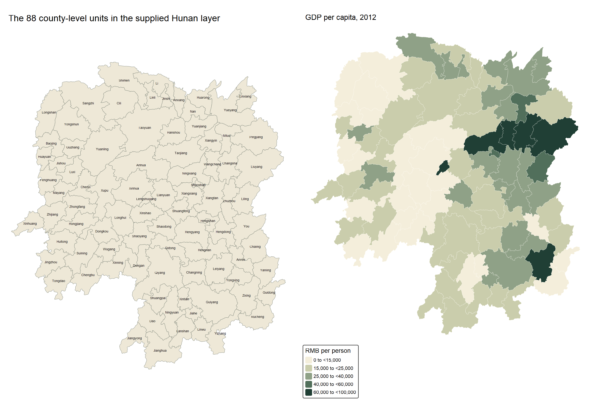
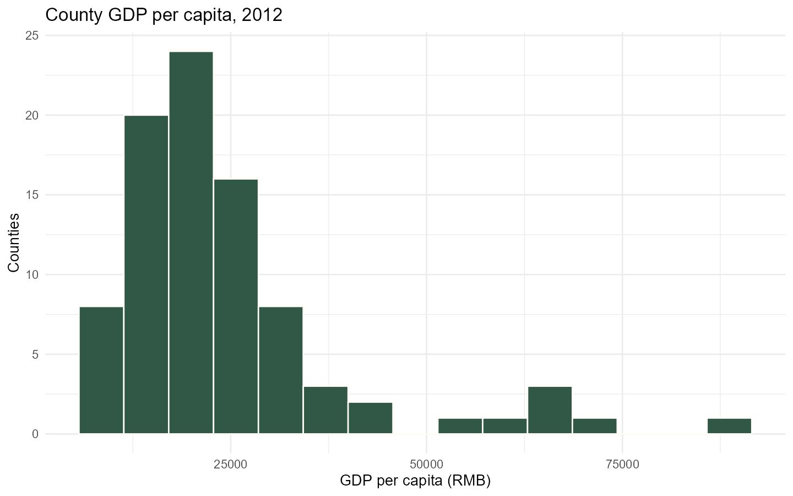
Changsha county records RMB 88,656 per person, at the upper end of a visibly uneven distribution. The histogram alone cannot establish whether the geographical arrangement is random. An unweighted county mean is also not the same as population-weighted provincial GDP per capita.
Converting to SpatialPolygonsDataFrame
suppressPackageStartupMessages(library(GWmodel))
# Keep WGS84 here, with great-circle distances in every GWmodel call.
# GWmodel uses polygon representative coordinates, distinct from the projected
# centroids used above for the spdep sensitivity comparison.
hunan_sp <- as_Spatial(hunan_sf)
stopifnot(identical(hunan_sp$County,hunan_sf$County))I preserve the sf object for mapping and convert a copy for GWmodel. Coordinates remain WGS84, so every GWmodel call explicitly requests great-circle distances with longlat=TRUE.
Geographically weighted summary statistics with adaptive bandwidth
bw_CV <- bw.gwr(GDPPC ~ 1, data=hunan_sp, approach="CV",
adaptive=TRUE, kernel="bisquare", longlat=TRUE)CV chooses a local scale through prediction error for the intercept-only model.
bw_AIC <- bw.gwr(GDPPC ~ 1, data=hunan_sp, approach="AICc",
adaptive=TRUE, kernel="bisquare", longlat=TRUE)
bandwidths <- data.frame(criterion=c("CV","AICc"),neighbours=c(bw_CV,bw_AIC))
print(bandwidths)
write_csv(bandwidths,file.path(base4,"outputs/bandwidths.csv"))The supplied script uses approach="AIC". I use the documented "AICc" spelling to make the corrected criterion explicit. This is an intercept-only model, not an economic regression with explanatory variables.
knitr::kable(bandwidths)| criterion | neighbours |
|---|---|
| CV | 22 |
| AICc | 22 |
Both searches select 22. This is an adaptive neighbour-count scale, not 22 kilometres. Agreement is reassuring for this calculation but does not make it a universal optimum. Focal observations enter the summaries, and compact kernels have zero weight at and beyond their cutoff.
Computing geographically weighted summary statistics
gwstat <- gwss(data=hunan_sp, vars="GDPPC", bw=bw_AIC,
kernel="bisquare", quantile=TRUE, adaptive=TRUE, longlat=TRUE)
# Verify returned coordinates and row order before attaching County keys.
extract_stats <- function(result) {
stopifnot(nrow(result$SDF)==nrow(hunan_sf),
isTRUE(all.equal(unname(sp::coordinates(result$SDF)),
unname(sp::coordinates(hunan_sp)),tolerance=1e-10)))
out <- as.data.frame(result$SDF@data)
stopifnot(all(vapply(out,function(x) all(is.finite(x)),logical(1))))
out$County <- hunan_sf$County
out
}
gwstat_df <- extract_stats(gwstat)
hunan_gstat <- left_join(hunan_sf,gwstat_df,by="County",relationship="one-to-one")
print(names(gwstat_df))
write_csv(gwstat_df,file.path(base4,"outputs/gw-summary.csv"))The AICc-selected bisquare model requests both ordinary and robust summaries. Before joining output to the map, I verify returned coordinates and then attach the county key. This protects against silently assigning a statistic to the wrong polygon.
Visualising geographically weighted summary statistics
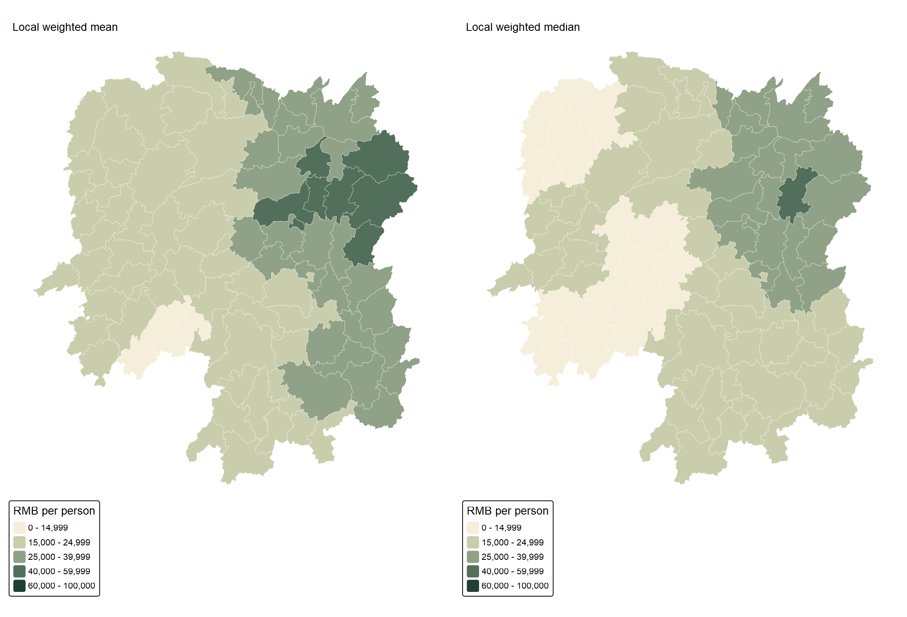
The local weighted mean ranges from RMB 13,689 to RMB 49,006. Comparing the median helps question whether high values pull up the mean. These two maps share fixed monetary breaks: the same colour therefore means the same amount.
Five-class quantile map from the class exercise
Quantiles emphasise relative rank rather than equal monetary differences. I keep the class exercise’s five classes but use the portal’s forest palette.
tm_shape(hunan_gstat) +
tm_polygons(fill="GDPPC_LM",
fill.scale=tm_scale_intervals(style="quantile", n=5, values=palette4),
fill.legend=tm_legend(title="Local mean (RMB/person)")) +
tm_borders(col="#fffdf7", lwd=0.4) +
tm_title("Geographically weighted mean GDP per capita") +
tm_layout(frame=FALSE, legend.outside=TRUE)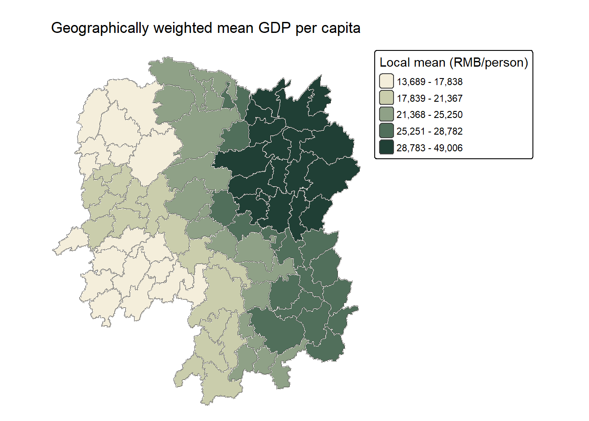
Spread, shape and robust summaries
knitr::kable(stat_ranges, digits=2, caption="Computed ranges of the eight local summaries")| statistic | minimum | maximum |
|---|---|---|
| GDPPC_LM | 13688.70 | 49005.84 |
| GDPPC_LSD | 4282.60 | 22568.84 |
| GDPPC_LVar | 18340655.70 | 509352591.03 |
| GDPPC_LSKe | -0.22 | 3.75 |
| GDPPC_LCV | 0.20 | 0.80 |
| GDPPC_Median | 11580.00 | 41491.00 |
| GDPPC_IQR | 4074.00 | 36188.00 |
| GDPPC_QI | -0.85 | 0.63 |
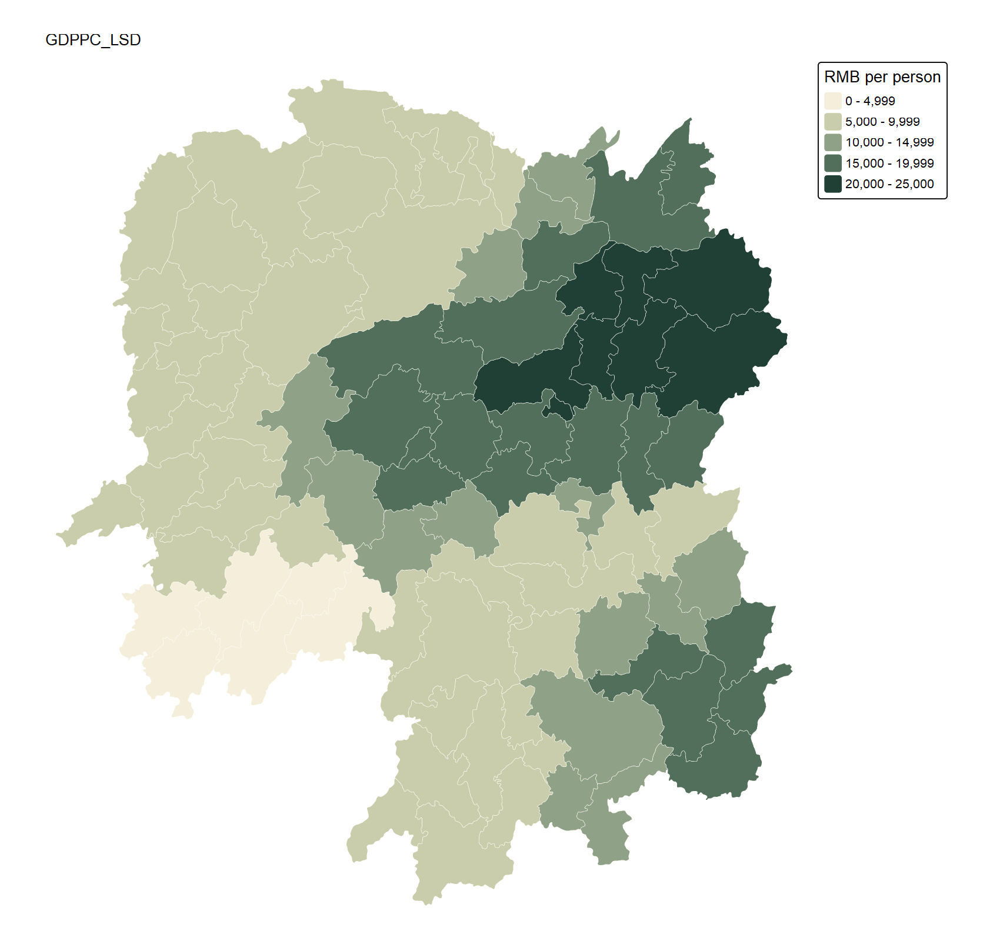
Dispersion is in RMB per person, not uncertainty around a causal estimate.
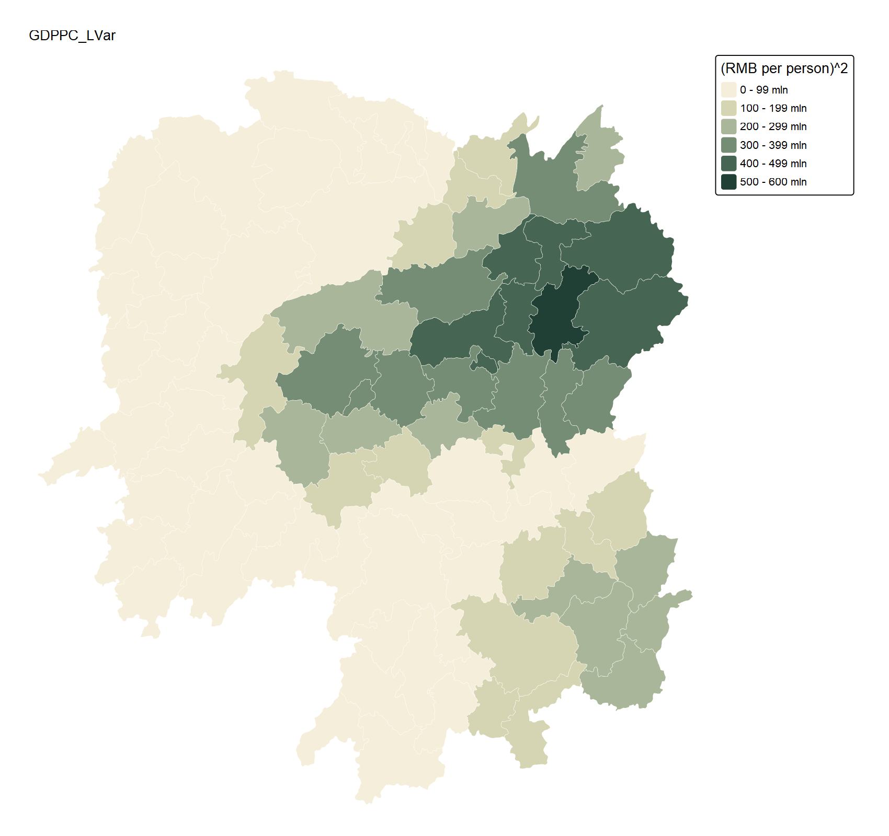
Variance is in squared RMB-per-person units and is not directly comparable with GDPPC.
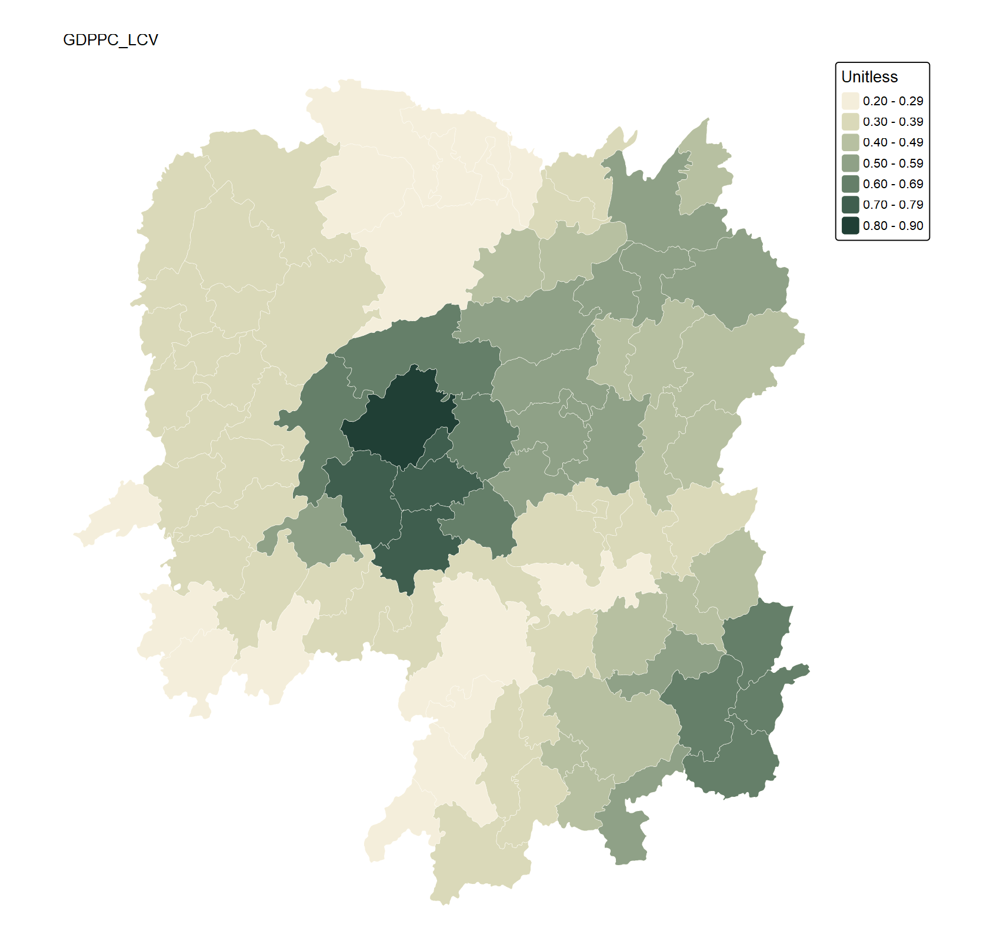
This unitless measure expresses standard deviation relative to the local mean.
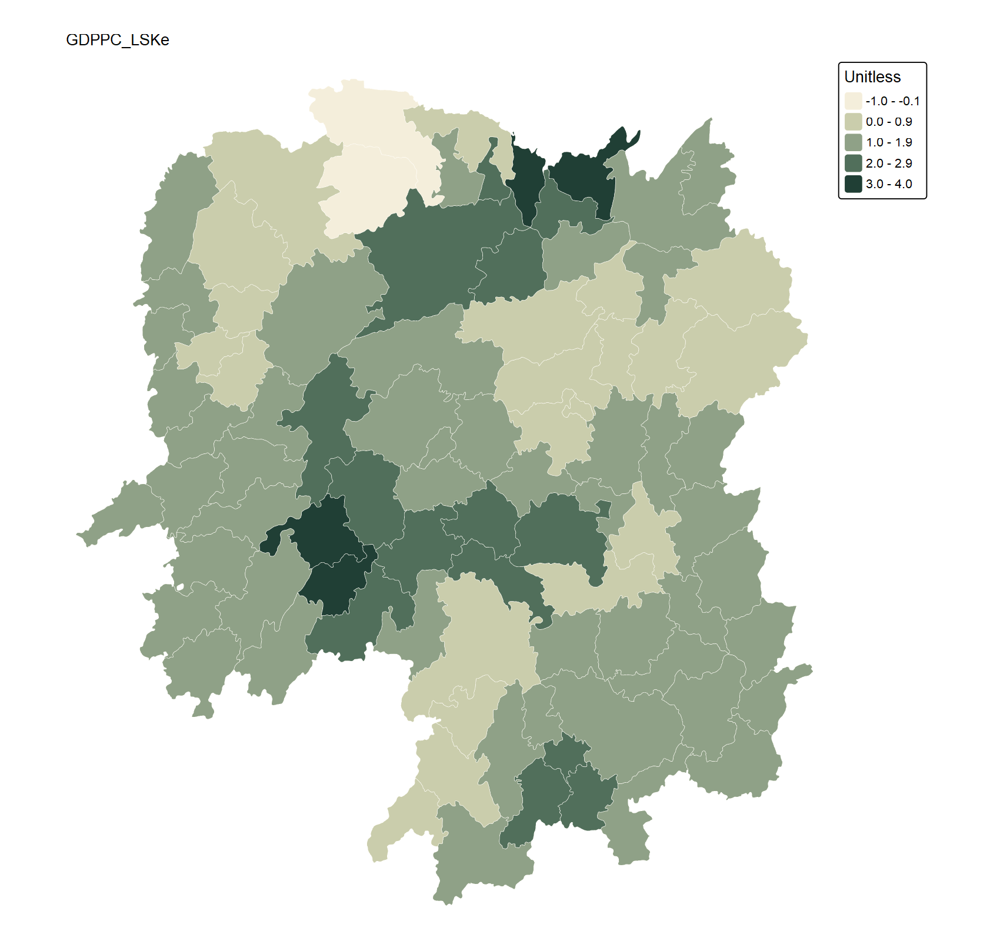
Positive values indicate a longer upper tail within the weighted neighbourhood.
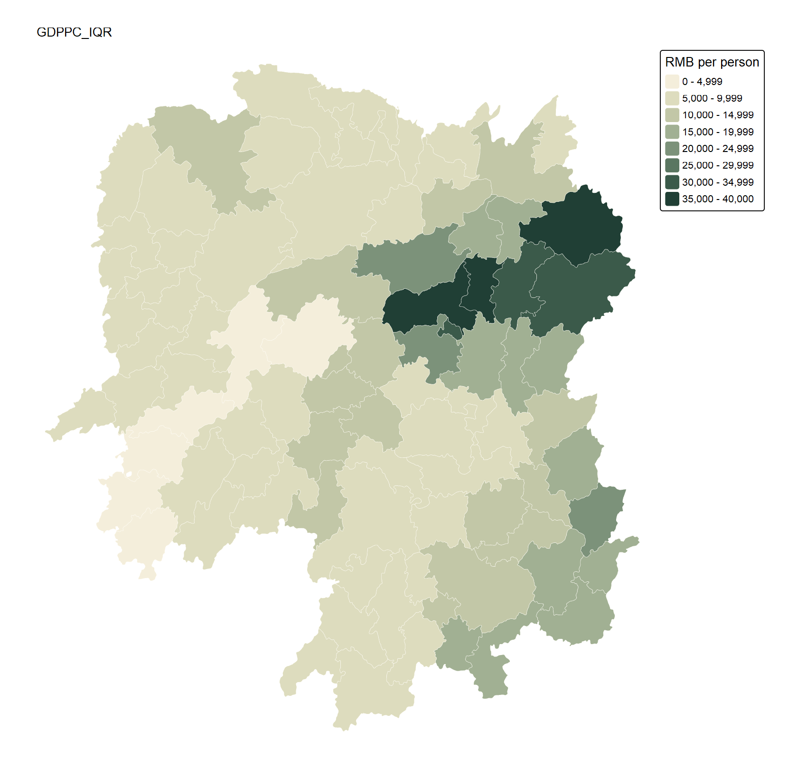
The IQR describes the middle half of the weighted distribution and is less dominated by extremes than variance.
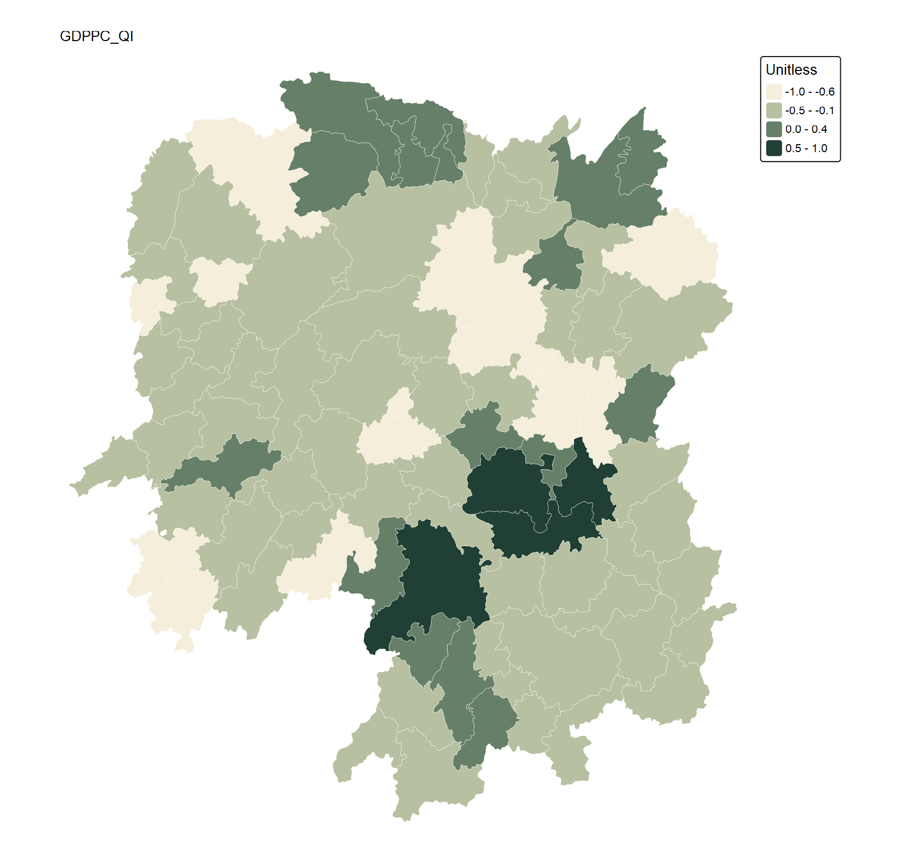
This is a robust, unitless description of asymmetry around the median.
Comparing five kernels
kernels <- c("gaussian","exponential","bisquare","tricube","boxcar")
kernel_results <- setNames(lapply(kernels,function(k) {
extract_stats(gwss(hunan_sp,vars="GDPPC",bw=bw_AIC,kernel=k,
adaptive=TRUE,quantile=TRUE,longlat=TRUE))
}),kernels)
kernel_summary <- bind_rows(lapply(kernels,function(k) {
x <- kernel_results[[k]]$GDPPC_LM
data.frame(kernel=k,min_mean=min(x),max_mean=max(x),
mean_abs_change=mean(abs(x-gwstat_df$GDPPC_LM)))
}))
write_csv(kernel_summary,file.path(base4,"outputs/kernel-comparison.csv"))
print(kernel_summary)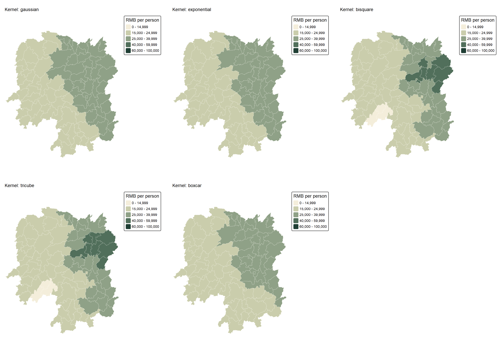
knitr::kable(kernel_summary, digits=1, caption="Local means and mean absolute change from bisquare (RMB/person)")| kernel | min_mean | max_mean | mean_abs_change |
|---|---|---|---|
| gaussian | 19412.4 | 32290.5 | 3701.6 |
| exponential | 20501.5 | 32266.5 | 3937.9 |
| bisquare | 13688.7 | 49005.8 | 0.0 |
| tricube | 13506.3 | 48411.4 | 180.6 |
| boxcar | 15546.5 | 37463.3 | 2528.9 |
Tricube is closest to bisquare, with a mean absolute difference of about RMB 181. Gaussian and exponential kernels compress the range: their local maxima are around RMB 32,300 rather than the bisquare maximum of RMB 49,006. Their non-zero tails mean the adaptive scale does not restrict contributions to only 22 observations. Boxcar gives equal weights inside its cutoff.
I hold the bisquare-selected bandwidth constant to isolate kernel sensitivity. These kernels have not each been optimised separately, so this is not a ranking of predictive performance.
Local economic association: extension
# Keep the lesson's 37-neighbour setting as a specified sensitivity scale,
# not an optimised correlation bandwidth. Correct its longitude/latitude flag.
gwCorr <- gwss(hunan_sp,vars=c("GDPPC","Agri"),bw=37,
kernel="bisquare",adaptive=TRUE,longlat=TRUE)
correlation_df <- extract_stats(gwCorr) |>
select(County,Corr_GDPPC.Agri,Spearman_rho_GDPPC.Agri)
stopifnot(all(abs(correlation_df$Corr_GDPPC.Agri)<=1),
all(abs(correlation_df$Spearman_rho_GDPPC.Agri)<=1))
global_cor <- data.frame(method=c("Pearson","Spearman"),
correlation=c(cor(hunan_sf$GDPPC,hunan_sf$Agri),
cor(hunan_sf$GDPPC,hunan_sf$Agri,method="spearman")))
write_csv(correlation_df,file.path(base4,"outputs/local-correlations.csv"))
write_csv(global_cor,file.path(base4,"outputs/global-correlations.csv"))
print(global_cor); print(summary(correlation_df))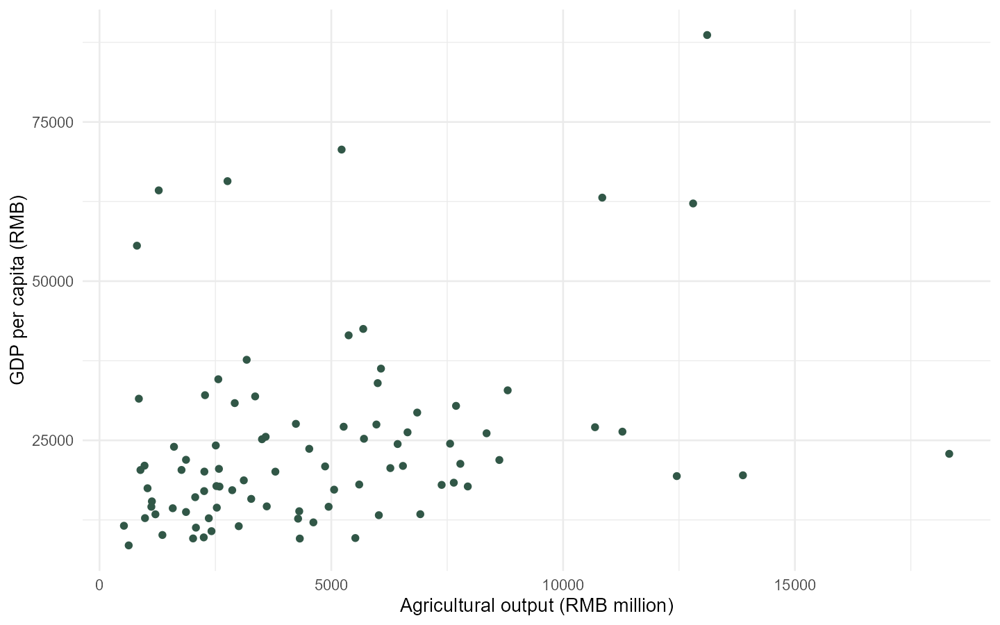
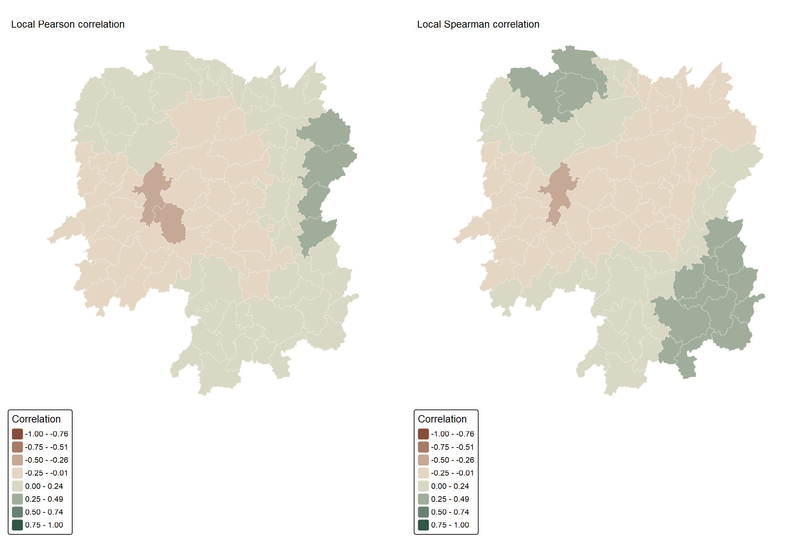
The overall Pearson correlation is 0.305, but local Pearson correlations at the lesson’s 37-neighbour scale range from −0.286 to 0.358. The overall Spearman correlation is 0.359, while the local values range from −0.317 to 0.488. A positive province-wide association does not describe every neighbourhood equally well.
The 37-neighbour setting is a specified comparison scale, not a correlation-specific optimum. I use great-circle distances rather than treating degrees as planar units. Overlapping local summaries are exploratory, not independent significance tests. Agricultural output is an absolute total whereas GDPPC is per capita; county size and economic composition may affect the comparison. These maps do not establish causation.
Spatial weights: supporting comparison
The complete script retains Queen/Rook, distance and spatial-lag calculations as background to the weighting idea.
knitr::kable(graph_summary, digits=2)| method | links | mean_degree | min_degree | max_degree | isolates | components | symmetric |
|---|---|---|---|---|---|---|---|
| Queen | 448 | 5.09 | 1 | 11 | 0 | 1 | TRUE |
| Rook | 440 | 5.00 | 1 | 10 | 0 | 1 | TRUE |
| 1-NN | 88 | 1.00 | 1 | 1 | 0 | 24 | FALSE |
| 62 km | 324 | 3.68 | 1 | 6 | 0 | 1 | TRUE |
| 6-NN | 528 | 6.00 | 6 | 6 | 0 | 1 | FALSE |
| 6-NN symmetric union | 614 | 6.98 | 6 | 10 | 0 | 1 | TRUE |
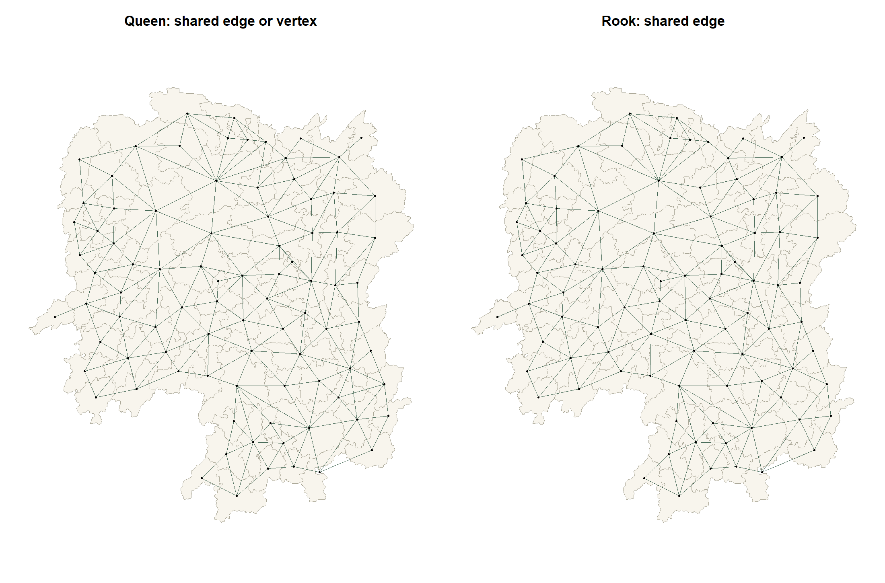
Queen has 448 directed links and Rook has 440. The 62-km graph is connected without isolated counties. One-nearest-neighbour linking also has no isolates, yet forms 24 disconnected components. These are different diagnostic checks.
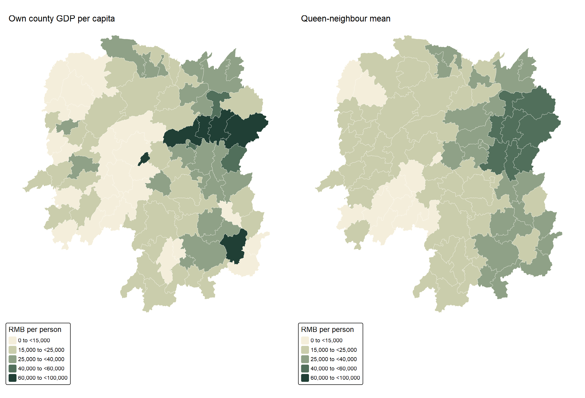
Anxiang’s own GDPPC is RMB 23,667, versus a Queen-neighbour mean of RMB 24,847.2. Including itself produces a window mean of RMB 24,650.5. A sum of county per-capita values is only an arithmetic exercise, not regional GDP.
What I learned
The most useful distinction for me is between choosing a neighbourhood and choosing how strongly each observation contributes. The same adaptive scale can produce quite different local economic summaries.
CV and AICc agree at 22 here, but the kernel comparison stops me from treating one smoothed map as the only possible picture. The median and IQR are useful checks when a few unusually high values influence the mean and variance.
From a finance perspective, I need to check the denominator before comparing economic indicators. GDP per capita and total agricultural output answer different questions. Local correlation can identify places to investigate; it cannot establish an investment thesis or a causal relationship by itself.
Sources and reproducible files
- Dr Kam Tin Seong, Lesson 4, consulted 19 September 2026, plus the supplied classroom script and photographs.
- Supplied Hunan shapefile, Hunan_2012.csv and Dictionary.xlsx, prepared locally on 19 September 2026. The archive does not establish a new download date. No current data are substituted.
- GWmodel bandwidth documentation and GWSS documentation.
- Complete R script, local summaries CSV, kernel comparisons CSV, session information.
- Download mean/median PNG or five-kernel PNG.
{kind=link}
{kind=link}
Complete script
All preparation, plotting helpers and calculations are available below and in the downloadable R file.
# In-class Exercise 4: Spatial Weights and Applications
# Full script for RStudio. Select a section and press Ctrl+Enter, or click Source.
# Uses the Hunan data supplied for Chapter 8; no data are downloaded.
# If needed, install once:
# install.packages(c("sf","dplyr","readr","readxl","spdep","tmap","ggplot2","GWmodel"))
#
# Locate this coursework project without relying on one computer's absolute path.
find_course_root <- function(start) {
p <- normalizePath(start, winslash="/", mustWork=FALSE)
repeat {
if(file.exists(file.path(p,"_quarto.yml")) &&
dir.exists(file.path(p,"Hands-on_Ex/Hands-on_Ex04"))) return(p)
parent <- dirname(p)
if(identical(parent,p)) return(NA_character_)
p <- parent
}
}
locations <- getwd()
if(requireNamespace("rstudioapi",quietly=TRUE) && rstudioapi::isAvailable()) {
active_path <- rstudioapi::getActiveDocumentContext()$path
if(nzchar(active_path)) locations <- c(locations,dirname(active_path))
}
file_arg <- grep("^--file=",commandArgs(),value=TRUE)
if(length(file_arg)) locations <- c(locations,dirname(sub("^--file=","",file_arg[1])))
roots <- vapply(locations,find_course_root,character(1))
if(all(is.na(roots))) stop("Open this course project in RStudio, then run the script again.")
setwd(roots[which(!is.na(roots))[1]])
input_base4 <- "In-class_Ex/In-class_Ex04"
suppressPackageStartupMessages({library(sf);library(dplyr);library(readr)})
base4 <- "In-class_Ex/In-class_Ex04"
for(d in c("outputs","figures")) dir.create(file.path(base4,d),recursive=TRUE,showWarnings=FALSE)
# Set COURSE_DATA_ZIP when reproducing from a different computer.
zip_path <- Sys.getenv("COURSE_DATA_ZIP",unset="")
if(nzchar(zip_path)) {
entries <- unzip(zip_path,list=TRUE)$Name
stopifnot(!any(grepl("(^/|^[A-Za-z]:|(^|/)\\.\\.(/|$))",entries)))
wanted <- c("data/aspatial/Hunan_2012.csv","data/aspatial/Dictionary.xlsx",
paste0("data/geospatial/Hunan.",c("shp","shx","dbf","prj","qpj")))
stopifnot(all(wanted %in% entries))
if(!all(file.exists(file.path(input_base4,wanted)))) unzip(zip_path,files=wanted,exdir=input_base4)
}
files <- list.files(file.path(input_base4,"data"),recursive=TRUE,full.names=TRUE)
stopifnot(length(files)==7)
manifest4 <- tibble(file=sub(paste0(input_base4,"/"),"",files,fixed=TRUE),md5=unname(tools::md5sum(files)))
manifest_path <- file.path(base4,"outputs/input-checksums.csv")
if(file.exists(manifest_path)) stopifnot(identical(read_csv(manifest_path,show_col_types=FALSE)$md5,manifest4$md5)) else write_csv(manifest4,manifest_path)
## ---- import-and-join
hunan_boundary <- st_read(file.path(input_base4,"data/geospatial/Hunan.shp"),quiet=TRUE)
hunan2012 <- read_csv(file.path(input_base4,"data/aspatial/Hunan_2012.csv"),show_col_types=FALSE)
stopifnot(!anyDuplicated(hunan_boundary$County),!anyDuplicated(hunan2012$County))
unmatched_boundary <- anti_join(st_drop_geometry(hunan_boundary),hunan2012,by="County")
unmatched_table <- anti_join(hunan2012,st_drop_geometry(hunan_boundary),by="County")
stopifnot(nrow(unmatched_boundary)==0,nrow(unmatched_table)==0)
hunan <- left_join(hunan_boundary,hunan2012,by="County",relationship="one-to-one") |>
select(NAME_2, ID_3, NAME_3, County, GDPPC, GIO, Agri, Service)
hunan_sf <- hunan
stopifnot(nrow(hunan)==88,!anyNA(hunan$GDPPC),all(is.finite(hunan$GDPPC)),all(hunan$GDPPC>0),
st_crs(hunan)$epsg==4326,!any(st_is_empty(hunan)),all(st_is_valid(hunan)))
# Preserve polygon order: neighbours and lag vectors use this exact order.
dictionary <- readxl::read_excel(file.path(input_base4,"data/aspatial/Dictionary.xlsx"))
gdppc_definition <- dictionary |> filter(Variable=="GDPPC")
audit4 <- tibble(check=c("Boundary rows","Indicator rows","Joined rows","Duplicate county keys",
"Unmatched boundary keys","Unmatched indicator keys","Missing GDPPC","Invalid geometries","Empty geometries"),
value=c(nrow(hunan_boundary),nrow(hunan2012),nrow(hunan),0,nrow(unmatched_boundary),nrow(unmatched_table),sum(is.na(hunan$GDPPC)),sum(!st_is_valid(hunan)),sum(st_is_empty(hunan))))
write_csv(audit4,file.path(base4,"outputs/input-audit.csv"))
write_csv(gdppc_definition,file.path(base4,"outputs/gdppc-definition.csv"))
## ---- end-import
print(audit4)
suppressPackageStartupMessages({library(spdep);library(tmap);library(ggplot2)})
## ---- contiguity
queen <- poly2nb(hunan,queen=TRUE,row.names=hunan$County)
rook <- poly2nb(hunan,queen=FALSE,row.names=hunan$County)
stopifnot(all(card(queen)>0),all(card(rook)>0))
## ---- centroids-and-distance
# Form centroids in metres, then transform back for great-circle distances in km.
hunan_projected <- st_transform(hunan,32649)
centres <- st_transform(st_centroid(st_geometry(hunan_projected)),4326)
coords4 <- st_coordinates(centres)
stopifnot(!anyDuplicated(as.data.frame(coords4)))
nearest1 <- knn2nb(knearneigh(coords4,k=1,longlat=TRUE),row.names=hunan$County)
nearest_dist <- unlist(nbdists(nearest1,coords4,longlat=TRUE))
threshold_km <- ceiling(max(nearest_dist))
fixed62 <- dnearneigh(coords4,0,62,longlat=TRUE,row.names=hunan$County)
knn6 <- knn2nb(knearneigh(coords4,k=6,longlat=TRUE),row.names=hunan$County)
knn6_symmetric <- make.sym.nb(knn6)
stopifnot(threshold_km<=62,all(card(fixed62)>0),all(card(knn6)==6))
# Reproduce the workbook's degree-coordinate centroids and default planar KNN
# only as a sensitivity check; never label degree distances as kilometres.
chapter_coords <- t(vapply(st_geometry(hunan),function(g) as.numeric(st_centroid(g)),numeric(2)))
chapter62 <- dnearneigh(chapter_coords,0,62,longlat=TRUE)
chapter6 <- knn2nb(knearneigh(chapter_coords,k=6,longlat=FALSE))
changed_links <- function(a,b) sum(vapply(seq_along(a),function(i) length(setdiff(a[[i]],b[[i]])),integer(1)))
sensitivity4 <- tibble(comparison=c("62 km: projected vs workbook centroids","6-NN: great-circle/projected centroids vs workbook planar degrees"),
added_directed_links=c(changed_links(fixed62,chapter62),changed_links(knn6,chapter6)),
removed_directed_links=c(changed_links(chapter62,fixed62),changed_links(chapter6,knn6)))
networks <- list(Queen=queen,Rook=rook,`1-NN`=nearest1,`62 km`=fixed62,`6-NN`=knn6,`6-NN symmetric union`=knn6_symmetric)
graph_summary <- bind_rows(lapply(names(networks),function(nm){nb<-networks[[nm]];degrees<-card(nb)
tibble(method=nm,links=sum(degrees),mean_degree=mean(degrees),min_degree=min(degrees),max_degree=max(degrees),
isolates=sum(degrees==0),components=n.comp.nb(make.sym.nb(nb))$nc,symmetric=is.symmetric.nb(nb,force=TRUE))}))
component62 <- n.comp.nb(fixed62)$comp.id
degree_table <- tibble(County=hunan$County,queen=card(queen),rook=card(rook),fixed62=card(fixed62),knn6=card(knn6),component62=component62)
## ---- inverse-distance
queen_dist <- nbdists(queen,coords4,longlat=TRUE)
stopifnot(all(unlist(queen_dist)>0))
idw <- lapply(queen_dist,function(d) 1/d)
idw_raw <- nb2listw(queen,glist=idw,style="B",zero.policy=FALSE)
idw_w <- nb2listw(queen,glist=idw,style="W",zero.policy=FALSE)
## ---- row-standardisation
queen_w <- nb2listw(queen,style="W",zero.policy=FALSE)
queen_b <- nb2listw(queen,style="B",zero.policy=FALSE)
weight_audit <- bind_rows(lapply(list(Queen_W=queen_w,Queen_B=queen_b,IDW_raw=idw_raw,IDW_W=idw_w),function(w){
s<-vapply(w$weights,sum,numeric(1));tibble(min_row_sum=min(s),max_row_sum=max(s))}),.id="scheme")
## ---- lag-average
hunan$lag_average <- lag.listw(queen_w,hunan$GDPPC,zero.policy=FALSE)
## ---- lag-sum
hunan$lag_sum <- lag.listw(queen_b,hunan$GDPPC,zero.policy=FALSE)
## ---- window-average
queen_self <- include.self(queen)
self_w <- nb2listw(queen_self,style="W",zero.policy=FALSE)
hunan$window_average <- lag.listw(self_w,hunan$GDPPC,zero.policy=FALSE)
## ---- window-sum
self_b <- nb2listw(queen_self,style="B",zero.policy=FALSE)
hunan$window_sum <- lag.listw(self_b,hunan$GDPPC,zero.policy=FALSE)
hunan$idw_average <- lag.listw(idw_w,hunan$GDPPC,zero.policy=FALSE)
## ---- check-results
manual_average <- vapply(queen,function(j)mean(hunan$GDPPC[j]),numeric(1))
stopifnot(max(abs(manual_average-hunan$lag_average))<1e-8,
max(abs(hunan$lag_sum-hunan$lag_average*card(queen)))<1e-7,
max(abs(hunan$window_sum-hunan$lag_sum-hunan$GDPPC))<1e-7,
max(abs(hunan$window_average-hunan$window_sum/(card(queen)+1)))<1e-7,
max(abs(vapply(queen_w$weights,sum,numeric(1))-1))<1e-12,
max(abs(vapply(idw_w$weights,sum,numeric(1))-1))<1e-12,
sum(card(queen))==448,sum(card(rook))==440)
anxiang <- match("Anxiang",hunan$County)
anxiang_neighbours <- tibble(County=hunan$County[queen[[anxiang]]],GDPPC=hunan$GDPPC[queen[[anxiang]]],
distance_km=queen_dist[[anxiang]],equal_weight=queen_w$weights[[anxiang]],raw_idw=idw[[anxiang]],normalised_idw=idw_w$weights[[anxiang]])
results4 <- st_drop_geometry(hunan) |> select(County,NAME_2,GDPPC,lag_average,lag_sum,window_average,window_sum,idw_average) |>
mutate(neighbours=card(queen),difference=GDPPC-lag_average)
top_differences <- results4 |> arrange(desc(abs(difference))) |> head(6)
for(nm in c("graph_summary","degree_table","sensitivity4","weight_audit","anxiang_neighbours","results4","top_differences"))
write_csv(get(nm),file.path(base4,"outputs",paste0(nm,".csv")))
saveRDS(list(hunan=hunan,networks=networks,queen_w=queen_w,idw_raw=idw_raw,idw_w=idw_w,
self_w=self_w,self_b=self_b,coords=coords4),file.path(base4,"outputs/weights-and-results.rds"))
## ---- maps
tmap_mode("plot")
palette4 <- c("#f4eedb","#d5d5b3","#a9b699","#758d75","#466553","#203f35")
average_breaks <- c(0,15000,25000,40000,60000,100000)
stopifnot(max(hunan$GDPPC)<max(average_breaks))
map_variable <- function(column,title,breaks=average_breaks,legend="RMB per person") {
labels <- paste0(format(head(breaks,-1),big.mark=",",trim=TRUE)," to <",format(tail(breaks,-1),big.mark=",",trim=TRUE))
tm_shape(st_transform(hunan,32649))+tm_polygons(fill=column,
fill.scale=tm_scale_intervals(style="fixed",breaks=breaks,labels=labels,values=palette4),
fill.legend=tm_legend(title=legend),col="#fffdf7",lwd=.35)+tm_title(title,size=1.1)+
tm_layout(frame=FALSE,legend.outside=TRUE)
}
save_map <- function(x,name,width=2200,height=1500) tmap_save(x,file.path(base4,"figures",paste0(name,".png")),width=width,height=height,units="px",dpi=180)
basemap4 <- tm_shape(hunan_projected)+tm_polygons(fill="#eee8d7",col="#6e776d",lwd=.5)+
tm_text("NAME_3",size=.45)+tm_title("The 88 county-level units in the supplied Hunan layer")+tm_layout(frame=FALSE)
save_map(basemap4,"county-basemap",2000,1800)
save_map(map_variable("GDPPC","GDP per capita, 2012"),"gdppc",1700,1600)
save_map(tmap_arrange(map_variable("GDPPC","Own county GDP per capita"),map_variable("lag_average","Queen-neighbour mean"),ncol=2),"lag-average")
sum_breaks <- pretty(range(c(hunan$GDPPC,hunan$lag_sum,hunan$window_sum)),n=5)
save_map(tmap_arrange(map_variable("GDPPC","Own county GDP per capita",sum_breaks,"Sum of per-capita values"),
map_variable("lag_sum","Sum across Queen neighbours",sum_breaks,"Sum of per-capita values"),ncol=2),"lag-sum")
save_map(tmap_arrange(map_variable("lag_average","Neighbours only"),map_variable("window_average","Own county plus neighbours"),ncol=2),"window-average")
save_map(tmap_arrange(map_variable("lag_sum","Neighbours only",sum_breaks,"Sum of per-capita values"),
map_variable("window_sum","Own county plus neighbours",sum_breaks,"Sum of per-capita values"),ncol=2),"window-sum")
png_graph <- function(name,expr,width=2200,height=1450){png(file.path(base4,"figures",paste0(name,".png")),width=width,height=height,res=170);on.exit(dev.off());force(expr)}
draw_nb <- function(nb,title,col="#426653") {plot(st_geometry(hunan),border="#aaa797",col="#f8f5ed",main=title);plot(nb,coords4,add=TRUE,col=col,pch=19,cex=.4,length=.04)}
png_graph("contiguity",{par(mfrow=c(1,2),mar=c(1,1,3,1));draw_nb(queen,"Queen: shared edge or vertex");draw_nb(rook,"Rook: shared edge")})
png_graph("distance",{par(mfrow=c(1,2),mar=c(1,1,3,1));draw_nb(nearest1,"One nearest neighbour");draw_nb(fixed62,"All neighbours within 62 km")})
png_graph("distance-overlay",{par(mar=c(1,1,3,1));draw_nb(fixed62,"62 km links with first-neighbour links overlaid",col="#777c70");plot(nearest1,coords4,add=TRUE,col="#a17832",length=.06);legend("bottomleft",legend=c("62 km","First neighbour"),col=c("#777c70","#a17832"),lty=1,bty="n")},1600,1700)
png_graph("knn6",{par(mar=c(1,1,3,1));draw_nb(knn6,"Six nearest neighbours: directed links")},1600,1700)
diagnostic_plot <- ggplot(results4,aes(GDPPC,lag_average))+geom_abline(slope=1,intercept=0,linetype="dashed",colour="#b08e51")+
geom_point(colour="#315747",alpha=.8,size=2)+labs(x="Own GDP per capita (RMB)",y="Queen-neighbour mean (RMB)",
title="Own county and neighbouring GDP per capita",subtitle="Dashed line: equality, not a fitted regression")+theme_minimal(base_size=13)
ggsave(file.path(base4,"figures/own-vs-neighbours.png"),diagnostic_plot,width=9,height=6,dpi=180)
writeLines(capture.output(sessionInfo()),file.path(base4,"outputs/session-info.txt"))
print(graph_summary);print(weight_audit);print(anxiang_neighbours);print(top_differences);print(sensitivity4)
message("Exercise 4: all numerical checks passed")
# Display the main map in the RStudio Plots pane when sourcing interactively.
if(interactive()) print(map_variable("GDPPC","In-class Exercise 4: GDP per capita"))
## ---- gw-conversion
suppressPackageStartupMessages(library(GWmodel))
# Keep WGS84 here, with great-circle distances in every GWmodel call.
# GWmodel uses polygon representative coordinates, distinct from the projected
# centroids used above for the spdep sensitivity comparison.
hunan_sp <- as_Spatial(hunan_sf)
stopifnot(identical(hunan_sp$County,hunan_sf$County))
## ---- bandwidth-cv
bw_CV <- bw.gwr(GDPPC ~ 1, data=hunan_sp, approach="CV",
adaptive=TRUE, kernel="bisquare", longlat=TRUE)
## ---- bandwidth-aicc
bw_AIC <- bw.gwr(GDPPC ~ 1, data=hunan_sp, approach="AICc",
adaptive=TRUE, kernel="bisquare", longlat=TRUE)
bandwidths <- data.frame(criterion=c("CV","AICc"),neighbours=c(bw_CV,bw_AIC))
print(bandwidths)
write_csv(bandwidths,file.path(base4,"outputs/bandwidths.csv"))
## ---- gw-statistics
gwstat <- gwss(data=hunan_sp, vars="GDPPC", bw=bw_AIC,
kernel="bisquare", quantile=TRUE, adaptive=TRUE, longlat=TRUE)
# Verify returned coordinates and row order before attaching County keys.
extract_stats <- function(result) {
stopifnot(nrow(result$SDF)==nrow(hunan_sf),
isTRUE(all.equal(unname(sp::coordinates(result$SDF)),
unname(sp::coordinates(hunan_sp)),tolerance=1e-10)))
out <- as.data.frame(result$SDF@data)
stopifnot(all(vapply(out,function(x) all(is.finite(x)),logical(1))))
out$County <- hunan_sf$County
out
}
gwstat_df <- extract_stats(gwstat)
hunan_gstat <- left_join(hunan_sf,gwstat_df,by="County",relationship="one-to-one")
print(names(gwstat_df))
write_csv(gwstat_df,file.path(base4,"outputs/gw-summary.csv"))
## ---- kernel-comparison
kernels <- c("gaussian","exponential","bisquare","tricube","boxcar")
kernel_results <- setNames(lapply(kernels,function(k) {
extract_stats(gwss(hunan_sp,vars="GDPPC",bw=bw_AIC,kernel=k,
adaptive=TRUE,quantile=TRUE,longlat=TRUE))
}),kernels)
kernel_summary <- bind_rows(lapply(kernels,function(k) {
x <- kernel_results[[k]]$GDPPC_LM
data.frame(kernel=k,min_mean=min(x),max_mean=max(x),
mean_abs_change=mean(abs(x-gwstat_df$GDPPC_LM)))
}))
write_csv(kernel_summary,file.path(base4,"outputs/kernel-comparison.csv"))
print(kernel_summary)
## ---- gw-correlation
# Keep the lesson's 37-neighbour setting as a specified sensitivity scale,
# not an optimised correlation bandwidth. Correct its longitude/latitude flag.
gwCorr <- gwss(hunan_sp,vars=c("GDPPC","Agri"),bw=37,
kernel="bisquare",adaptive=TRUE,longlat=TRUE)
correlation_df <- extract_stats(gwCorr) |>
select(County,Corr_GDPPC.Agri,Spearman_rho_GDPPC.Agri)
stopifnot(all(abs(correlation_df$Corr_GDPPC.Agri)<=1),
all(abs(correlation_df$Spearman_rho_GDPPC.Agri)<=1))
global_cor <- data.frame(method=c("Pearson","Spearman"),
correlation=c(cor(hunan_sf$GDPPC,hunan_sf$Agri),
cor(hunan_sf$GDPPC,hunan_sf$Agri,method="spearman")))
write_csv(correlation_df,file.path(base4,"outputs/local-correlations.csv"))
write_csv(global_cor,file.path(base4,"outputs/global-correlations.csv"))
print(global_cor); print(summary(correlation_df))
## ---- gw-maps
gw_map <- function(data,column,title,breaks,units="RMB per person",colours=palette4) {
tm_shape(st_transform(data,32649)) + tm_polygons(fill=column,
fill.scale=tm_scale_intervals(style="fixed",breaks=breaks,values=colours),
fill.legend=tm_legend(title=units),col="#fffdf7",lwd=.3) +
tm_title(title,size=.9) + tm_layout(frame=FALSE,legend.outside=TRUE)
}
save_map(tmap_arrange(basemap4,map_variable("GDPPC","GDP per capita, 2012"),ncol=2),
"county-and-gdppc",2600,1800)
save_map(tmap_arrange(gw_map(hunan_gstat,"GDPPC_LM","Local weighted mean",average_breaks),
gw_map(hunan_gstat,"GDPPC_Median","Local weighted median",average_breaks),ncol=2),"gw-mean-median")
stat_columns <- setdiff(names(gwstat_df),"County")
stat_ranges <- bind_rows(lapply(stat_columns,function(nm) {
data.frame(statistic=nm,minimum=min(gwstat_df[[nm]]),maximum=max(gwstat_df[[nm]]))
}))
write_csv(stat_ranges,file.path(base4,"outputs/statistic-ranges.csv"))
for(nm in setdiff(stat_columns,c("GDPPC_LM","GDPPC_Median"))) {
units <- if(grepl("LSD|IQR",nm)) "RMB per person" else if(grepl("LVar$",nm)) "(RMB per person)^2" else "Unitless"
save_map(gw_map(hunan_gstat,nm,nm,pretty(range(gwstat_df[[nm]]),n=5),units),paste0("gw-",nm),1700,1600)
}
kernel_maps <- lapply(kernels,function(k) {
data <- left_join(hunan_sf,kernel_results[[k]],by="County")
gw_map(data,"GDPPC_LM",paste("Kernel:",k),average_breaks)
})
save_map(do.call(tmap_arrange,c(kernel_maps,list(ncol=3))),"kernel-comparison",3000,2100)
cor_sf <- left_join(hunan_sf,correlation_df,by="County")
save_map(tmap_arrange(
gw_map(cor_sf,"Corr_GDPPC.Agri","Local Pearson correlation",seq(-1,1,.25),"Correlation",c("#874d39","#f4eedb","#315747")),
gw_map(cor_sf,"Spearman_rho_GDPPC.Agri","Local Spearman correlation",seq(-1,1,.25),"Correlation",c("#874d39","#f4eedb","#315747")),ncol=2),"gw-correlations")
attribute_plot <- ggplot(st_drop_geometry(hunan_sf),aes(GDPPC))+
geom_histogram(bins=15,fill="#315747",colour="#fffdf7")+
labs(x="GDP per capita (RMB)",y="Counties",title="County GDP per capita, 2012")+theme_minimal()
ggsave(file.path(base4,"figures/gdppc-distribution.png"),attribute_plot,width=8,height=5,dpi=180)
scatter_plot <- ggplot(st_drop_geometry(hunan_sf),aes(Agri,GDPPC))+
geom_point(colour="#315747")+labs(x="Agricultural output (RMB million)",y="GDP per capita (RMB)")+theme_minimal()
ggsave(file.path(base4,"figures/agri-gdppc.png"),scatter_plot,width=8,height=5,dpi=180)
writeLines(capture.output(sessionInfo()),file.path(base4,"outputs/session-info.txt"))
message("In-class Exercise 4: weights, bandwidths, GWSS and correlation checks passed.")